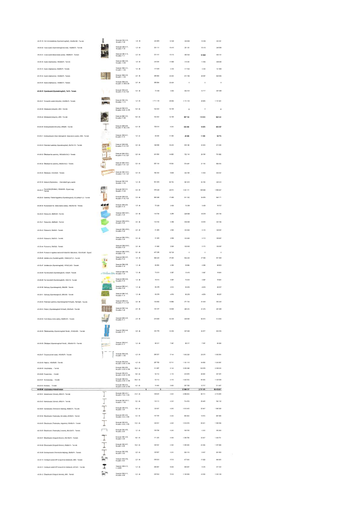

| Tétel | Megjegyzés | Menny. | Egys. | Anyag e.ár (net HUF) | Díj e.ár (net HUF) | Anyag összesen (net HUF) | Díj összesen (net HUF) | Anyag+Díj összesen (net HUF) |
|---|---|---|---|---|---|---|---|---|
| 45-20-19 Zárt tárolószekrény (Gyermekmegőrző), 140x25x180 - Termék | Konszig jel: BM-2-16, He.szám: F.20 | 1,0 | db | 222 963 | 12 338 | 222 963 | 12 338 | 235 301 |
| 45-20-20 Irodai asztal (Gyermekmegőrző, iroda), 160x80x75 - Termék | Konszig jel: BM-2-17, He.szám: F.18 | 1,0 | db | 231 151 | 15 415 | 231 151 | 15 415 | 246 566 |
| 45-20-21 Irodai asztal (Baba-mama szoba), 160x80x75 - Termék | Konszig jel: BM-2-18, He.szám: F.11 | 2,0 | db | 231 151 | 15 415 | 462 302 | 30 829 | 493 131 |
| 45-20-22 Asztal (Sajtószoba), 150x80x75 - Termék | Konszig jel: BM-2-20, He.szám: 1.102 | 1,0 | db | 316 391 | 11 665 | 316 391 | 11 665 | 328 056 |
| 45-20-23 Asztal (Sajtószoba), 60x80x75 - Termék | Konszig jel: BM-2-21, He.szám: 1.102 | 1,0 | db | 117 623 | 4 335 | 117 623 | 4 335 | 121 958 |
| 45-20-24 Asztal (Sajtószoba), 120x80x75 - Termék | Konszig jel: BM-2-22, He.szám: 1.102 | 2,0 | db | 305 894 | 23 464 | 611 788 | 46 927 | 658 715 |
| 45-20-25 Asztal (Sajtószoba), 120x80x75 - Termék | Konszig jel: BM-2-22, He.szám: A.105-A.108 | 0,0 | db | 305 894 | 23 464 | 0 | 0 | 0 |
| 45-20-26 Gyereksztal (Gyermekmegőrző), 70x74 - Termék | Konszig jel: BM-2-23, He.szám: F.19, F.20 | 4,0 | db | 73 328 | 3 429 | 293 312 | 13 717 | 307 029 |
| 45-20-27 Recepciós asztal (könyvtár), 222x80x75 - Termék | Konszig jel: BM-2-24, He.szám: F.110 | 1,0 | db | 1 711 116 | 26 805 | 1 711 116 | 26 805 | 1 737 921 |
| 45-20-28 Oldalasztal (könyvtár), Ø50 - Termék | Konszig jel: BM-2-25, He.szám: A.52 / A.105 | 0,0 | db | 134 522 | 10 108 | 0 | 0 | 0 |
| 45-20-29 Oldalasztal (könyvtár), Ø50 - Termék | Konszig jel: BM-2-25, He.szám: F.110 | 6,0 | db | 134 522 | 10 108 | 807 132 | 60 648 | 867 780 |
| 45-20-30 Dohányzóasztal (könyvtár), Ø80x30 - Termék | Konszig jel: BM-2-26, He.szám: F.110, A.52 | 4,0 | db | 158 816 | 4 243 | 635 264 | 16 974 | 652 237 |
| 45-20-31 Dohányzóasztal (Gyermekmegőrző, Baba-mama szoba), Ø50 - Termék | Konszig jel: BM-2-27, He.szám: F.11 | 1,0 | db | 48 389 | 11 385 | 48 389 | 11 385 | 59 774 |
| 45-20-32 Pelenkázó szekrény (Gyermekmegőrző), 85x75x110 - Termék | Konszig jel: BM-2-28, He.szám: F.19, F.20 | 2,0 | db | 189 090 | 16 425 | 378 180 | 32 850 | 411 030 |
| 45-20-33 Öltözőpad és szekrény, 120,5x25x12,5 - Termék | Konszig jel: BM-2-29.1, He.szám: F.19, F.20 | 2,0 | db | 361 058 | 14 883 | 722 116 | 29 765 | 751 882 |
| 45-20-34 Öltözőpad és szekrény, 88x30x124,5 - Termék | Konszig jel: BM-2-29.2, He.szám: F.19, F.20 | 2,0 | db | 287 134 | 10 581 | 574 267 | 21 163 | 595 430 |
| 45-20-35 Öltözőpad, 120x32x30 - Termék | Konszig jel: BM-2-29.3, He.szám: F.19, F.20 | 2,0 | db | 160 354 | 5 909 | 320 708 | 11 819 | 332 527 |
| 45-20-36 Színpad (Lépcsőház), - Üzemeltetési igény szerint | Konszig jel: BM-2-30, He.szám: 1.102 | 1,0 | db | 361 579 | 64 764 | 361 579 | 64 764 | 426 343 |
| 45-20-37 Paravánfal (Értéktár), 180x30x200 - Egyedi vagy Termék | Konszig jel: BM-2-31, He.szám: F.102 | 4,0 | db | 375 428 | 26 674 | 1 501 711 | 106 696 | 1 608 407 |
| 45-20-38 Szekrény - Falvédő ügyekhez (Gyermekmegőrző), 92,2x56x211,2 - Termék | Konszig jel: BM-2-34, He.szám: F.19, F.20 | 2,0 | db | 305 596 | 17 439 | 611 192 | 34 879 | 646 071 |
| 45-20-39 Ruhaakasztó fal (Baba-mama szoba), 130x20x100 - Termék | Konszig jel: BM-2-33, He.szám: F.11 | 1,0 | db | 72 328 | 3 429 | 72 328 | 3 429 | 75 757 |
| 45-20-40 Puff-sarok, 48x40x43 - Termék | Konszig jel: BM-2-35.1, He.szám: F.20 | 2,0 | db | 114 794 | 5 288 | 229 588 | 10 576 | 240 164 |
| 45-20-41 Puff-sarok, 48x40x43 - Termék | Konszig jel: BM-2-35.2, He.szám: F.20 | 2,0 | db | 114 794 | 5 288 | 229 588 | 10 576 | 240 164 |
| 45-20-42 Puff-sarok, 50x50x3 - Termék | Konszig jel: BM-2-35.3, He.szám: F.20 | 2,0 | db | 51 963 | 2 585 | 103 926 | 5 170 | 109 097 |
| 45-20-43 Puff-sarok, 50x50x3 - Termék | Konszig jel: BM-2-35.4, He.szám: F.20 | 2,0 | db | 51 963 | 2 585 | 103 926 | 5 170 | 109 097 |
| 45-20-44 Puff-sarok, 50x50x5 - Termék | Konszig jel: BM-2-35.5, He.szám: F.20 | 2,0 | db | 51 963 | 2 585 | 103 926 | 5 170 | 109 097 |
| 45-20-45 Puff-sarok rugalmas matracból kialakított falburkolat, 150x185x50 - Egyedi | Konszig jel: BM-2-35.6, He.szám: F.20 | 0,0 | db | 437 285 | 82 720 | 0 | 0 | 0 |
| 45-20-46 Játékkonyha (Gyermekmegőrző), 120x32,5x121,5 - Termék | Konszig jel: BM-2-37, He.szám: F.20 | 1,0 | db | 594 443 | 27 383 | 594 443 | 27 383 | 621 826 |
| 45-20-47 Játékkonyha (Gyermekmegőrző), 167x5,2x53 - Termék | Konszig jel: BM-2-38, He.szám: F.20 | 1,0 | db | 82 684 | 4 269 | 82 684 | 4 269 | 86 953 |
| 45-20-48 Fali dekoráció (Gyermekmegőrző), 120x38 - Termék | Konszig jel: BM-2-39, He.szám: F.20 | 1,0 | db | 73 515 | 3 387 | 73 515 | 3 387 | 76 901 |
| 45-20-49 Fali dekoráció (Gyermekmegőrző), 140x118 - Termék | Konszig jel: BM-2-40, He.szám: F.19 | 1,0 | db | 73 515 | 3 387 | 73 515 | 3 387 | 76 901 |
| 45-20-50 Szőnyeg (Gyermekmegőrző), 200x300 - Termék | Konszig jel: BM-2-41, He.szám: F.20 | 1,0 | db | 83 278 | 4 979 | 83 278 | 4 979 | 88 257 |
| 45-20-51 Szőnyeg (Gyermekmegőrző), 200x300 - Termék | Konszig jel: BM-2-42, He.szám: F.19 | 1,0 | db | 83 278 | 4 979 | 83 278 | 4 979 | 88 257 |
| 45-20-52 Pelenkázó-szekrény (Gyermekmegőrző-Földszint), 70x70x85 - Termék | Konszig jel: BM-2-43, He.szám: F.11, F.28 | 2,0 | db | 135 862 | 10 802 | 271 724 | 21 605 | 293 329 |
| 45-20-53 Fali polc (Gyermekmegőrző-Földszint), 80x25x18 - Termék | Konszig jel: BM-2-44, He.szám: F.20 | 2,0 | db | 133 107 | 10 638 | 266 215 | 21 275 | 287 490 |
| 45-20-54 Fotel (Baba-mama szoba), 82x84x101 - Termék | Konszig jel: BM-2-45, He.szám: F.11 | 2,0 | db | 214 029 | 42 438 | 428 059 | 84 875 | 512 934 |
| 45-20-55 Öltözőszekrény (Gyermekmegőrző-Tároló), 67,5x50x180 - Termék | Konszig jel: BM-2-46, He.szám: F.17 | 2,0 | db | 163 779 | 12 338 | 327 558 | 24 677 | 352 235 |
| 45-20-56 Öltözőpad (Gyermekmegőrző-Tároló), 200x40x170 - Termék | Konszig jel: BM-2-47, He.szám: F.17 | 1,0 | db | 88 217 | 7 387 | 88 217 | 7 387 | 95 604 |
| 45-20-57 Összecsukható asztal, 160x80x75 - Termék | Konszig jel: BM-2-48, He.szám: 1.102 | 4,0 | db | 260 557 | 5 144 | 1 042 228 | 20 576 | 1 062 804 |
| 45-20-58 Ülőpad, 160x50 - Termék | Konszig jel: BM-2-49, He.szám: A.52 / A.105 | 4,0 | db | 297 780 | 13 717 | 1 191 118 | 54 869 | 1 245 987 |
| 45-20-59 Irányító-tábla, - Termék | Konszig jel: BM-2-50, He.szám: A.52 / A.105 | 20,0 | db | 111 667 | 5 144 | 2 233 348 | 102 878 | 2 336 226 |
| 45-20-60 Posztertartó, - Termék | Konszig jel: BM-2-51, He.szám: A.52 / A.105 | 6,0 | db | 52 112 | 4 115 | 312 670 | 24 691 | 337 361 |
| 45-20-61 Keretösszefogó, - Termék | Konszig jel: BM-2-52, He.szám: A.52 / A.105 | 20,0 | db | 52 112 | 4 115 | 1 042 233 | 82 305 | 1 124 538 |
| 45-20-62 Hordláda, - Termék | Konszig jel: BM-2-53, He.szám: A.52 / A.105 | 4,0 | db | 74 445 | 3 429 | 297 780 | 13 717 | 311 497 |
| 45-30-00 MNB VIP TERÜLETEK TERMÉKEI | NaN | 0 | - | 0 | 0 | 17 084 757 | 2 734 340 | 60 419 011 |
| 45-30-01 Kávézóasztal (Kávézó), Ø80x72 - Termék | Konszig jel: BM-3-01.1, He.szám: F.53, F.103 | 21,0 | db | 128 045 | 4 243 | 2 688 952 | 89 111 | 2 778 063 |
| 45-30-02 Kávézóasztal (Kávézó), Ø60x72 - Termék | Konszig jel: BM-3-01.2, He.szám: F.103 | 6,0 | db | 119 112 | 4 243 | 714 672 | 25 460 | 740 132 |
| 45-30-03 Kávézóasztal (Rekreációs helyiség), 80x80x74 - Termék | Konszig jel: BM-3-02, He.szám: F.103 | 8,0 | db | 126 557 | 4 243 | 1 012 452 | 33 947 | 1 046 399 |
| 45-30-04 Étkezőasztal (Teakonyha, kör alakú), Ø100x74 - Termék | Konszig jel: BM-3-03, He.szám: 3.33, 3.103 | 4,0 | db | 137 725 | 4 243 | 550 899 | 16 974 | 567 873 |
| 45-30-05 Étkezőasztal (Teakonyha, négyszögletes), 80x80x74 - Termék | Konszig jel: BM-3-04, He.szám: 3.33, 3.103 | 12,0 | db | 126 557 | 4 243 | 1 518 679 | 50 921 | 1 569 599 |
| 45-30-06 Étkezőasztal (Teakonyha, 2 személyes), 80x120x75 - Termék | Konszig jel: BM-3-05, He.szám: 4.69 | 1,0 | db | 156 706 | 4 243 | 156 706 | 4 243 | 160 950 |
| 45-30-07 Étkezőasztal (Dolgozói étterem), 90x180x74 - Termék | Konszig jel: BM-3-06, He.szám: 4.69 | 8,0 | db | 171 223 | 4 243 | 1 369 784 | 33 947 | 1 403 731 |
| 45-30-08 Étkezőasztal (Dolgozói étterem), 90x80x74 - Termék | Konszig jel: BM-3-07, He.szám: 4.69 | 10,0 | db | 126 557 | 4 243 | 1 265 565 | 42 434 | 1 307 999 |
| 45-30-09 Dohányzóasztal (Rekreációs helyiség), 80x80x74 - Termék | Konszig jel: BM-3-08, He.szám: 5.62 | 2,0 | db | 126 557 | 4 243 | 253 113 | 8 487 | 261 600 |
| 45-30-10 Dohányzó asztal (VIP recepció és közlekedő), Ø80 - Termék | Konszig jel: BM-3-09, He.szám: 4.03 | 2,0 | db | 238 522 | 8 510 | 477 045 | 17 020 | 494 065 |
| 45-30-11 Dohányzó asztal (VIP recepció és közlekedő), Ø70x51 - Termék | Konszig jel: BM-3-10, 4. emelet | 1,0 | db | 208 987 | 8 425 | 208 987 | 8 425 | 217 412 |
| 45-30-12 Étkezőasztal (Dolgozói étterem), Ø80 - Termék | Konszig jel: BM-3-11, He.szám: 4.69 | 5,0 | db | 238 522 | 8 510 | 1 192 608 | 42 550 | 1 235 158 |
